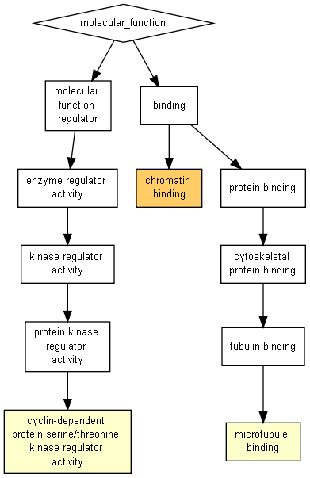

| > 10-3 | 10-3 to 10-5 | 10-5 to 10-7 | 10-7 to 10-9 | < 10-9 |

| GO term | Description | P-value | FDR q-value | Enrichment (N, B, n, b) | Genes |
| GO:0003682 | chromatin binding | 3.36E-6 | 6.06E-3 | 2.38 (1285,74,241,33) |
[+] Show genes |
| GO:0016538 | cyclin-dependent protein serine/threonine kinase regulator activity | 5.99E-5 | 5.4E-2 | 3.16 (1285,10,407,10) |
[+] Show genes |
| GO:0008017 | microtubule binding | 5.76E-4 | 3.46E-1 | 2.06 (1285,29,452,21) |
[+] Show genes |
Species used: Homo sapiens
The system has recognized 1366 genes out of 1388 gene terms entered by the user.
1365 genes were recognized by gene symbol and 1 genes by other gene IDs .
Only 1285 of these genes are associated with a GO term.
The GOrilla database is periodically updated using the GO database and other sources.
The GOrilla database was last updated on Jul 6, 2019
This results page will be available on this site for one month from now (until Aug 10, 2019 ). You can bookmark this page and come back to it later.